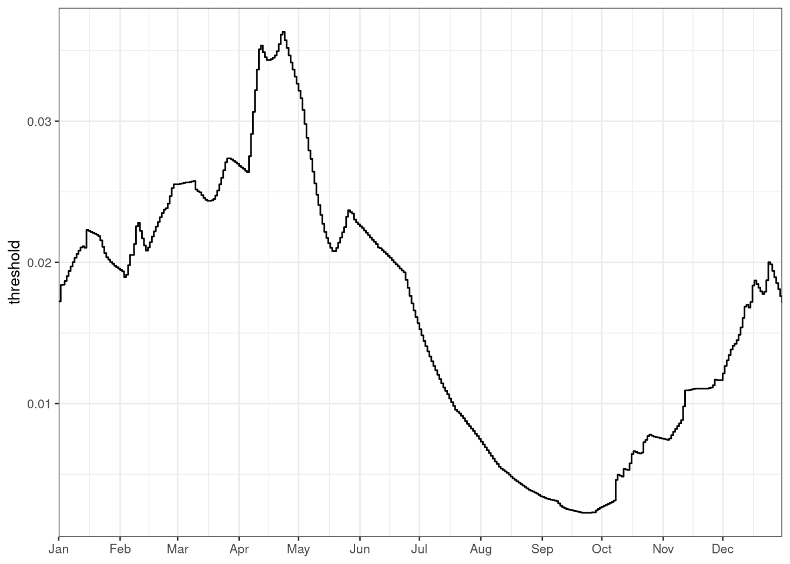
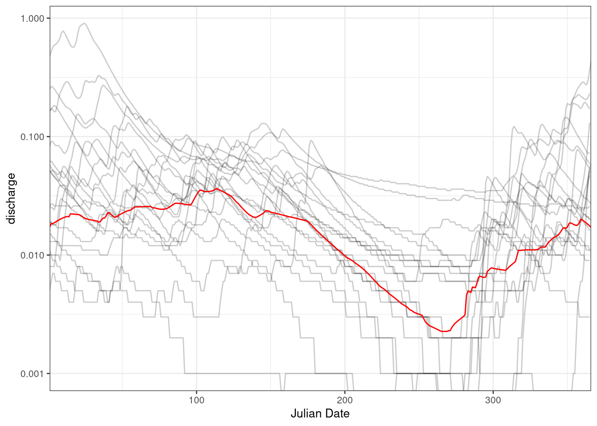
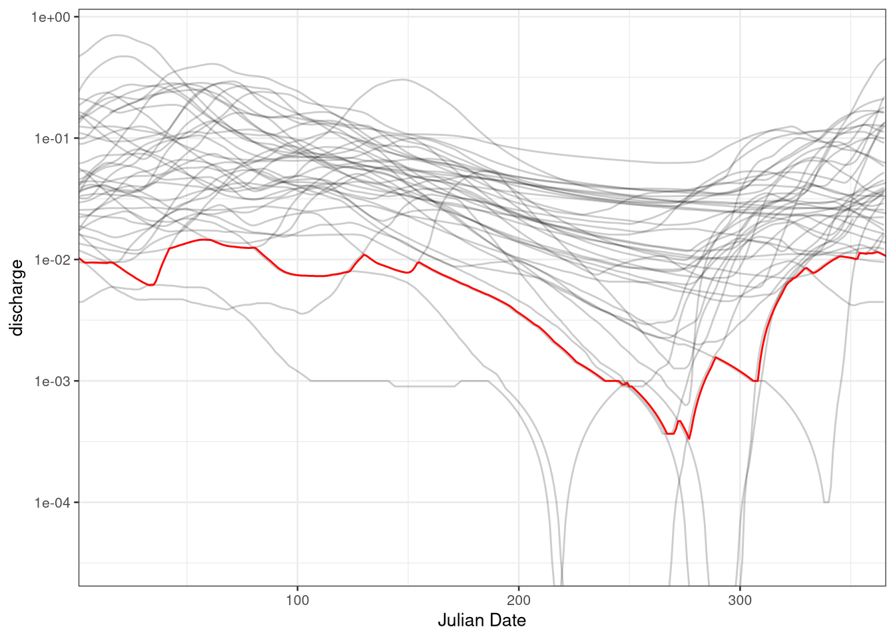
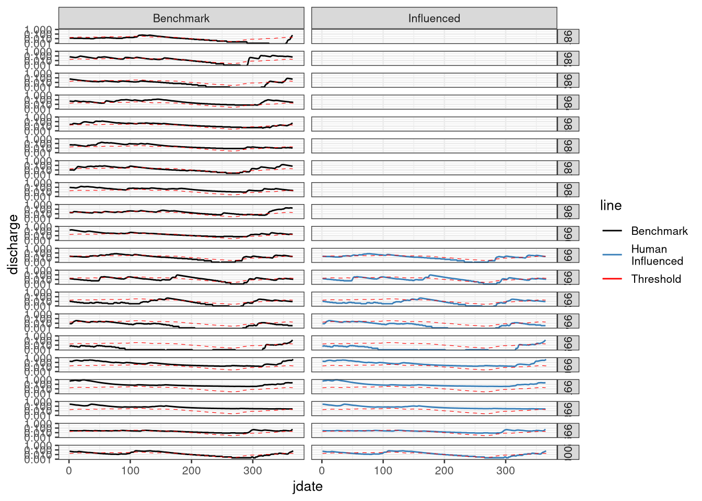
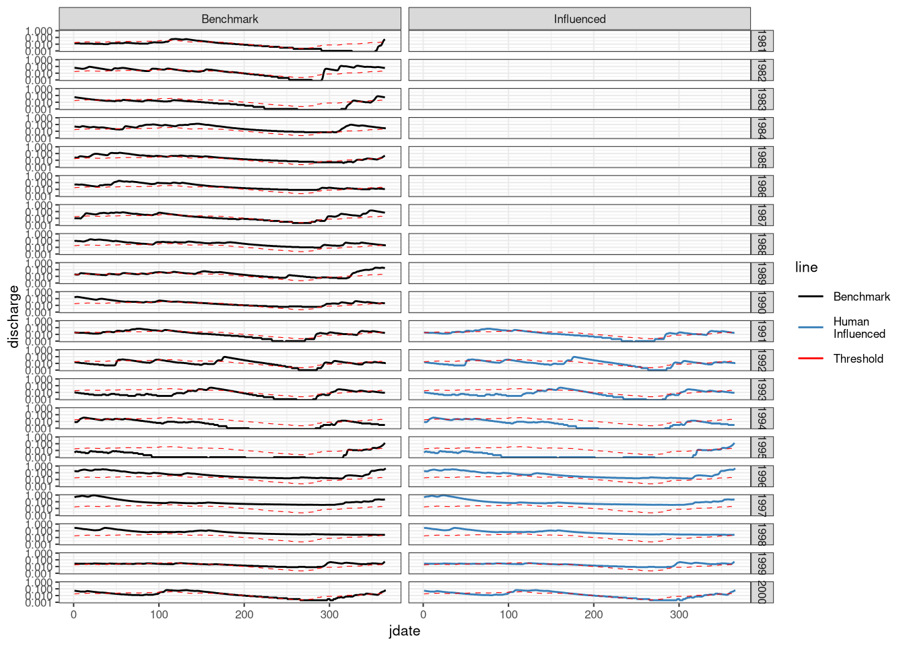
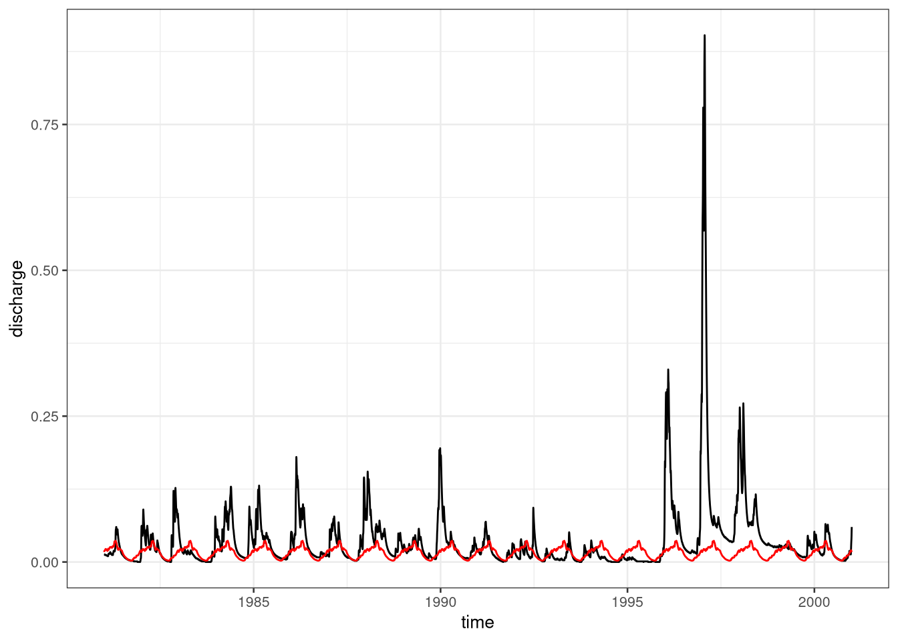
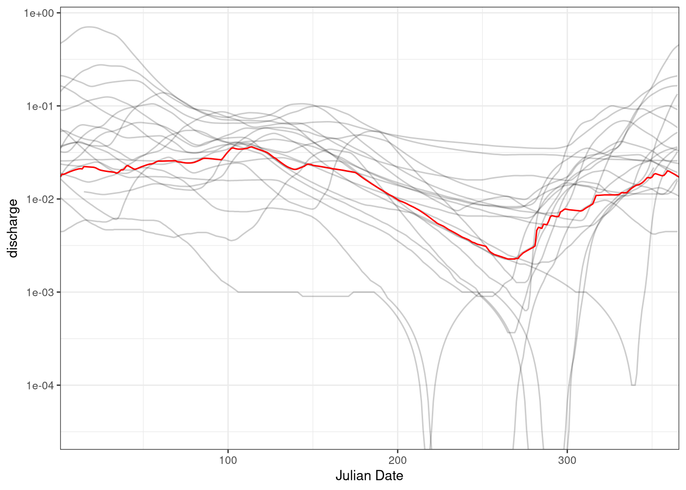
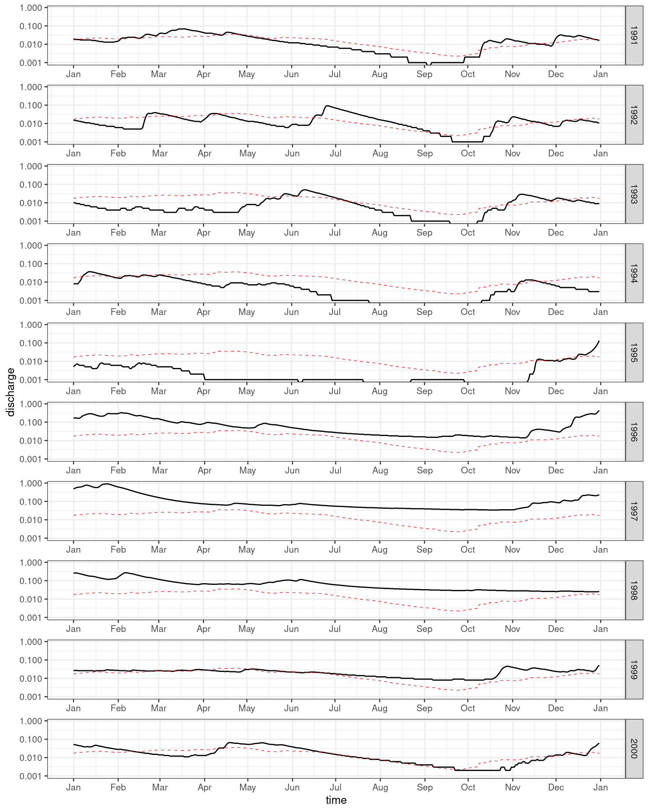

Chapter 10
Worked example 10.1: Quantifying effect of human influences
If we want to quantify the human influence on hydrological drought by comparing two time series, one with and one without this human influence, we want to use the threshold of the benchmark time series to calculate droughts in both the human-influenced and benchmark time series. These are the steps that we will discuss in this Worked Example:
Calculate the threshold from the benchmark time series
Calculate benchmark drought characteristics for the benchmark time series with the benchmark threshold
Calculate human-influenced drought characteristics for the human-influenced time series with the benchmark threshold
Compare drought characteristics between the benchmark & human-influenced time series
Loading the data
As an example we here use the Upper-Guadiana dataset with the two time series: the benchmark time series and the human-influenced time series.
library(tidyverse)
library(lubridate)
library(hydroDrought)
### Filter to a specific period
guadiana_period <- guadiana %>%
dplyr::select(time, discharge = Qsim) %>%
mutate(
year = water_year(time)
) %>%
filter(year >= 1960, year <= 2000) %>%
print(guadiana_period)## # A tibble: 14,976 x 3
## time discharge year
## <date> <dbl> <dbl>
## 1 1960-01-01 0.153 1960
## 2 1960-01-02 0.148 1960
## 3 1960-01-03 0.144 1960
## 4 1960-01-04 0.14 1960
## 5 1960-01-05 0.136 1960
## 6 1960-01-06 0.133 1960
## 7 1960-01-07 0.13 1960
## 8 1960-01-08 0.128 1960
## 9 1960-01-09 0.129 1960
## 10 1960-01-10 0.139 1960
## # … with 14,966 more rowsrange(guadiana_period$time)## [1] "1960-01-01" "2000-12-31"The benchmark time series comprises the uninfluenced, naturalized discharge \(Q_{sim}\). Note that benchmark time series can be calculated from a paired catchment analysis, an upstream-downstream comparison, model naturalisation, or pre-post disturbance analysis (Sect. 10.4.1 and 10.5.1) or from model scenarios (Sect. 10.4.3, 4 and 10.5.3, 4). The benchmark time series for this catchment are modelled as described in Sect. XX.
benchmark <- guadiana_period %>%
filter(year >= 1981, year <= 2000) %>%
print()## # A tibble: 7,305 x 3
## time discharge year
## <date> <dbl> <dbl>
## 1 1981-01-01 0.013 1981
## 2 1981-01-02 0.013 1981
## 3 1981-01-03 0.013 1981
## 4 1981-01-04 0.013 1981
## 5 1981-01-05 0.013 1981
## 6 1981-01-06 0.013 1981
## 7 1981-01-07 0.013 1981
## 8 1981-01-08 0.012 1981
## 9 1981-01-09 0.012 1981
## 10 1981-01-10 0.012 1981
## # … with 7,295 more rowsThe human-influenced time series is basically the time series of observed discharge \(Q_{obs}\) from the Upper-Guadiana catchment.
influenced <- guadiana_period %>%
filter(year >= 1991, year <= 2000) %>%
print()## # A tibble: 3,653 x 3
## time discharge year
## <date> <dbl> <dbl>
## 1 1991-01-01 0.019 1991
## 2 1991-01-02 0.019 1991
## 3 1991-01-03 0.018 1991
## 4 1991-01-04 0.018 1991
## 5 1991-01-05 0.018 1991
## 6 1991-01-06 0.017 1991
## 7 1991-01-07 0.017 1991
## 8 1991-01-08 0.017 1991
## 9 1991-01-09 0.017 1991
## 10 1991-01-10 0.017 1991
## # … with 3,643 more rowsThreshold calculation
Here we are taking the benchmark time series. First we are smoothing the column discharge with a 30-day moving average. The threshold itself is calculated as a daily varying \(Q_{80}\) yielding a dataset with a row for each day of the year and the appropriate \(Q_{80}\) in the column named threshold.
threshold <- guadiana_period %>%
# applying a 30-day moving average smoother
mutate(discharge = moving_average(discharge, n = 30, sides = "center")) %>%
# computing the Q80 for each day of the year
var_threshold(vary.by = "day", fun = lfquantile, exc.freq = 0.80)
print(threshold)## # A tibble: 366 x 2
## day threshold
## * <date> <dbl>
## 1 -01-01 0.0172
## 2 -01-02 0.0184
## 3 -01-03 0.0184
## 4 -01-04 0.0187
## 5 -01-05 0.0190
## 6 -01-06 0.0194
## 7 -01-07 0.0197
## 8 -01-08 0.0200
## 9 -01-09 0.0203
## 10 -01-10 0.0206
## # … with 356 more rowsp <- ggplot(data = threshold, aes(x = day, y = threshold)) +
geom_step() +
scale_x_date(date_breaks = "1 months", date_labels = "%b",
expand = expansion()) +
theme(axis.title.x = element_blank())
p
### Add Julian date columns to the benchmark and threshold
benchmark <- benchmark %>%
mutate(jdate = yday(time))
threshold <- threshold %>%
mutate(jdate = yday(day), year = year(day))
### Plot the threshold against monthly flows in log10 space
p <- ggplot(benchmark, aes(x=jdate)) +
geom_line(aes(group=year, y=discharge), alpha = 0.2) +
geom_line(data = threshold, aes(y=threshold), colour="red") +
scale_x_continuous(name = "Julian Date", expand = expansion()) +
scale_y_log10()
p
plot_df <- guadiana_period %>% mutate(jdate = yday(time), line = "thresh_basis", facet = "thresh_basis") %>%
bind_rows(benchmark %>% mutate(line = "benchmark", facet = "benchmark")) %>%
bind_rows(influenced %>% mutate(jdate = yday(time), line = "influenced", facet = "influenced")) %>%
left_join(threshold %>% select(jdate, threshold), by = "jdate") %>%
mutate(line = factor(line, levels = c("thresh_basis", "benchmark", "influenced"), labels = c("Threshold\nBasis", "Benchmark", "Human\nInfluenced"))) %>%
mutate(facet = factor(facet, levels = c("thresh_basis", "benchmark", "influenced"), labels = c("Threshold Basis", "Benchmark", "Influenced"))) %>%
mutate(label = "Threshold")
p <- ggplot(plot_df, aes(x=time)) %>%
+ geom_line(aes( y=discharge, colour = line)) %>%
+ geom_line(aes(y = threshold), colour = "grey20") %>%
+ facet_grid(facet~.) %>%
+ scale_y_log10()
p
p <- ggplot(plot_df, aes(x=time)) %>%
+ geom_line(aes( y=discharge, colour = line)) %>%
+ facet_grid(facet~.)
p
p <- ggplot(plot_df %>% filter(year >=1980 & facet != "Threshold Basis"), aes(x=jdate)) %>%
+ geom_line(aes( y=discharge, colour = line)) %>%
+ geom_step(aes(y = threshold, colour = label), linetype = "dashed", size = 0.2) %>%
+ facet_grid(year ~ facet, scales = "free_x") %>%
+ scale_colour_manual(values = c("black", "#377eb8", "red"), limits = c("Benchmark", "Human\nInfluenced", "Threshold")) %>%
# + scale_x_date(date_breaks = "1 month", date_labels = "%b") %>%
+ scale_y_log10()
p
p <- ggplot(plot_df %>% filter(year >=1980 & facet != "Threshold Basis"), aes(x=jdate)) %>%
+ geom_line(aes( y=discharge, colour = line)) %>%
+ geom_step(aes(y = threshold, colour = label), linetype = "dashed", size = 0.2) %>%
+ facet_grid(year ~ facet, scales = "free_x") %>%
+ scale_colour_manual(values = c("black", "#377eb8", "red"), limits = c("Benchmark", "Human\nInfluenced", "Threshold")) %>%
#+ scale_x_date(date_breaks = "1 month", date_labels = "%b") %>%
+ scale_y_log10() %>%
+ theme_bw(8)
p
ggplot(benchmark, aes(x=time)) %>%
+ geom_line(aes( y=discharge)) %>%
+ geom_line(data = benchmark %>% left_join(threshold, by = "jdate"), aes(y=threshold), colour="red")
### Plot the threshold against monthly flows in log10 space
ya <- benchmark %>%
mutate(discharge = moving_average(discharge, n = 30, sides = "center")) %>%
filter(year >= 1960, year <= 2000)
p <- ggplot(ya %>% drop_na(), aes(x=jdate)) +
geom_line(aes(group=year, y=discharge), alpha = 0.2) +
geom_line(data = threshold, aes(y=threshold), colour="red") +
scale_x_continuous(name = "Julian Date", expand = expansion()) +
scale_y_log10()
p
threshold <- threshold %>%
dplyr::select(-jdate, -year)Benchmark Drought characteristics
# initialize empty list for events
events <- list(benchmark = NULL, influenced = NULL)
# initialize empty list for final drought characteristics
drought.char <- list(benchmark = NULL, influenced = NULL)
# function that computes the drought characteristics given a table of events
summarize_dc <- function(x) {
c("mean.duration" = as.double(mean(x$duration)),
"mean.deficit" = mean(x$volume))
}Periods with discharges below the before calculated threshold are considered drought events. Consecutive drought events with an inter-event time of less than or equal to 10 days (argument min.duration = 10) get pooled into a single drought event regardless of their inter-event excess volume (argument min.vol.ratio = Inf). To get rid of minor droughts, only drought events with a duration of more than 10 days are kept.
# calculate the drought events for the benchmark time series
events$benchmark <- benchmark %>%
filter(year >= 1981, year <= 2000) %>%
drought_events(
threshold = threshold,
pooling = "inter-event",
pooling.pars = list(min.duration = 10, min.vol.ratio = Inf)
) %>%
filter(duration > 10)
# calculate the drought characteristics for the benchmark time series
drought.char$benchmark <- summarize_dc(events$benchmark)For the Upper-Guadiana, these would be the drought events of the benchmark time series. Note that this calculation can be applied for a different time period than was used to calculate the benchmark threshold (for example, for Upper-Guadiana, we are using the period 1981-2000). Events numbers that are missing in the sequence are minor drought events that have been filtered out.
print(events$benchmark)## # A tibble: 32 x 9
## event first.day last.day duration dbt volume qmin tqmin pooled
## <int> <date> <date> <drtn> <drtn> <dbl> <dbl> <date> <dbl>
## 1 1 1981-01-01 1981-04-22 112 days 112 days 100349. 0.01 1981-02-04 0
## 2 2 1981-06-09 1981-12-28 203 days 187 days 84024. 0 1981-11-23 4
## 3 5 1982-05-01 1982-06-01 32 days 30 days 7235. 0.017 1982-05-25 1
## 4 6 1982-06-25 1982-10-19 117 days 106 days 14406. 0 1982-10-07 3
## 5 7 1983-01-31 1983-11-22 296 days 296 days 202991. 0 1983-09-20 0
## 6 8 1983-12-03 1983-12-17 15 days 15 days 5915. 0.009 1983-12-13 0
## 7 9 1984-02-17 1984-02-27 11 days 11 days 3787. 0.018 1984-02-22 0
## 8 10 1984-10-22 1984-11-03 13 days 11 days 533. 0.007 1984-10-22 1
## 9 12 1985-10-12 1985-12-25 75 days 66 days 17653. 0.004 1985-11-12 2
## 10 13 1986-11-29 1987-01-11 44 days 44 days 22026. 0.009 1987-01-08 0
## # … with 22 more rowsHuman-influenced drought characteristics
We will now do the same drought calculation on the human-influenced time series, using the same period as for the benchmark drought calculation (here: 1981-2000).

# calculate the drought events for the human influenced time series
events$influenced <- influenced %>%
filter(year >= 1991 & year <= 2000) %>%
drought_events(threshold = threshold,
pooling = "inter-event",
pooling.pars = list(min.duration = 10, min.vol.ratio = Inf)) %>%
filter(duration > 10)
# calculate the drought characteristics for the human influenced time series
drought.char$influenced <- summarize_dc(events$influenced)Comparison of drought characteristics
For the Upper-Guadiana, these would be the drought characteristics:
drought.char## $benchmark
## mean.duration mean.deficit
## 90.59375 57967.00200
##
## $influenced
## mean.duration mean.deficit
## 97.23529 77893.12376Calculate the percentage difference between the benchmark and human-influenced drought characteristics.
\[\Delta DC = \frac{DCHI - DCBM}{DCBM} \cdot 100\] where \(\Delta DC\) is the percentage change in drought characteristics (\(DC\)) between the human-influenced (\(DCHI\)) and benchmark (\(DCBM\)) time series. For the Upper-Guadiana, these would be the differences in drought characteristics:
(drought.char$influenced - drought.char$benchmark) / drought.char$benchmark * 100## mean.duration mean.deficit
## 7.331128 34.374939Tobias: I think this Worked Example could be easier to follow if we fist compute the drought events for both time series and in a separate section the drought characteristics. So section 2 could become “Drought Events”, Section 3 “Drought Characteristics”.↩︎